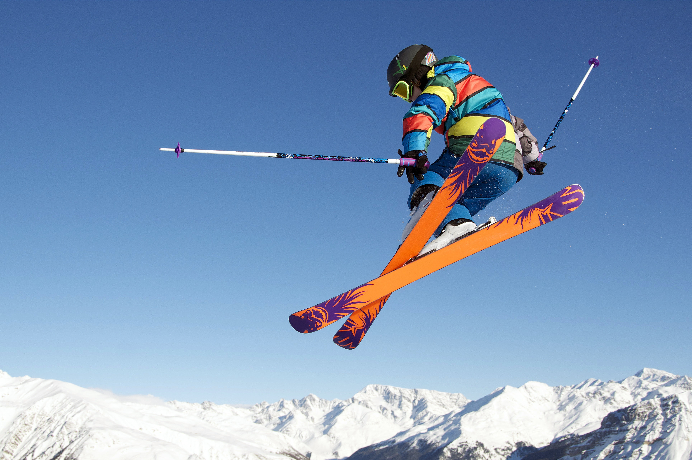

Welcome
We are a company dedicated to organizing unique ski trips, designed especially for university students and snow lovers. Our passion is to offer unforgettable experiences in the majestic mountains of Andorra.
Our packages include exciting days on the slopes, plus a wide range of activities, from ski lessons for all levels to vibrant snow music festivals with top international DJs.
Our Services
Ski lessons & Après-Ski
Our experienced instructors offer customized classes for beginners, intermediates, and experts. In addition, we organize après-ski sessions to enjoy after a day on the slopes, with entertainment and relaxing activities.
Music Fests
The fun continues when the sun goes down! We organize exciting music festivals in the snow with renowned DJs. Dance under the stars and experience the perfect fusion of sport and entertainment.

Location - Andorra
We are located in the spectacular ski resorts of Andorra, nestled in the stunning Pyrenees. With breathtaking landscapes and a wide variety of slopes for all levels, our trips guarantee a unique experience in an incomparable natural environment.
We are strategically located for easy access to the slopes, with cozy accommodations and modern amenities just steps from the main activities.

Means of Transport
We facilitate your arrival in Andorra by providing detailed information on the means of transport available:
- Train tickets (Renfe)
- Available flights(Skyscanner)
- Buses & transfer from nearby airports like Barcelona, Toulouse & Lérida
- Vehicle renting with discounts for our clients
- Transfer from nearby train stations